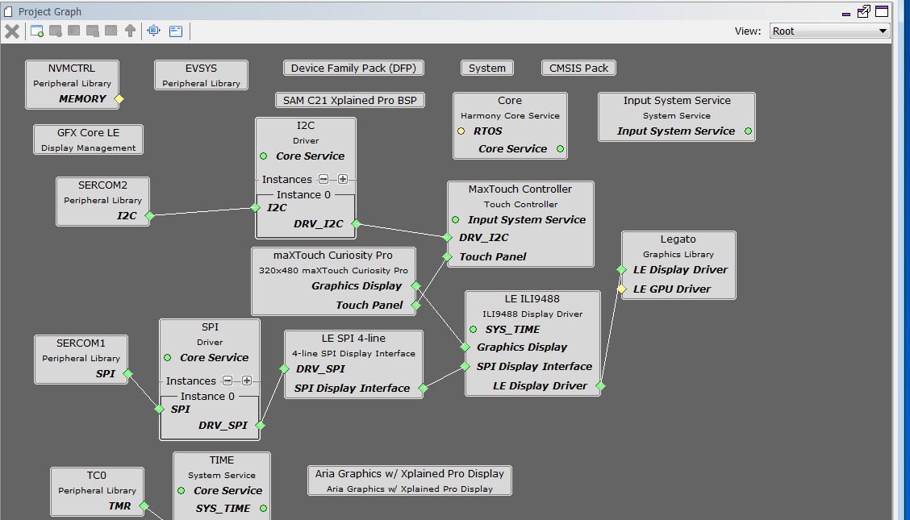
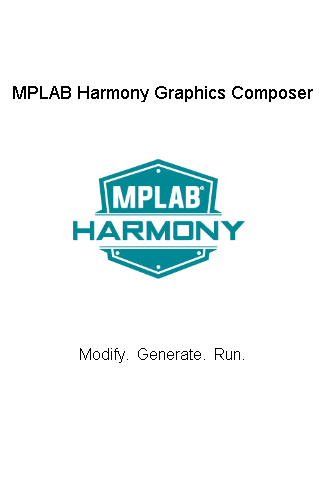

|
MPLAB® Harmony Graphics Suite
|
|
MPLAB® Harmony Graphics Suite
|
This legato_quickstart project uses a maXTouch Xplained Pro display panel that is connected to the C21 Xplained board. The display panel has an ILI9488 display controller that communicates to the C21 using the SPI peripheral. The ILI9488 contains a graphics memory (GRAM) that is used as frame buffer and the Legato graphics library uses the ILI9488 SPI driver to write pixel data to the ILI9488 GRAM. The maXTouch Xplained Pro board has a touch controller, but that is not supported in this project.

The Project Graph diagram shows the Harmony components that are included in this application. Lines between components are drawn to satisfy components that depend on a capability that another component provides.
Adding the SAM C21 Xplained Pro BSP and Legato Graphics w/ MXT Curiosity Pro Display Graphics Template component into the project graph will automatically add the components needed for a graphics project and resolve their dependencies. It will also configure the pins needed to drive the external peripherals like the display and the touch controller.
Under the configuration options for the Legato Graphics w/ MXT Curiosity Pro Display GFX template component, the Display Interface is set to LE SPI 4-line.
The parent directory for this application is gfx/apps/legato_quickstart. To build this application, use MPLABX IDE to open the gfx/apps/legato_quickstart/firmware/legato_quickstart_c21_xpro_cpro.X project file.
The following table lists configuration properties:
| Project Name | BSP Used | Graphics Template Used | Description |
|---|---|---|---|
| legato_quickstart_c21_xpro_cpro.X | SAM C21 Xplained Pro | Legato Graphics w/ maXTouch Curiosity Pro Display | Legato GFX on SAM C21 Xplained Pro Board and maXTouch Curiosity Pro Display with ILI9488 SPI display driver |
**_NOTE:_** This application may contain custom code that is marked by the comments // START OF CUSTOM CODE ... and // END OF CUSTOM CODE. When using the MPLAB Harmony Configurator to regenerate the application code, use the "ALL" merging strategy and do not remove or replace the custom code.
The final setup should be:

Set the IM switches on the MXT Curiosity Pro Display to IM[2:0] = 111b.

When power-on is successful, the demonstration will display a similar menu to that shown in the following figure (different configurations may have slight variation in the screen aspect ratio):

 1.8.18
1.8.18